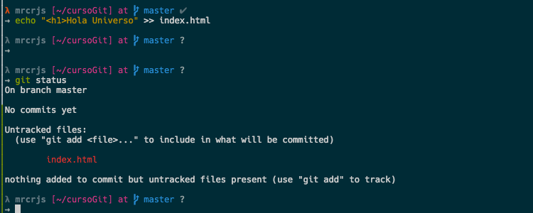
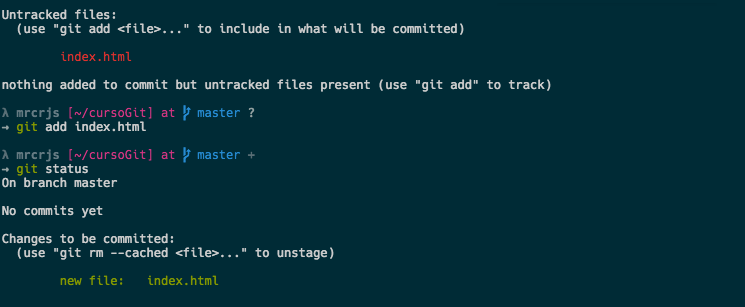
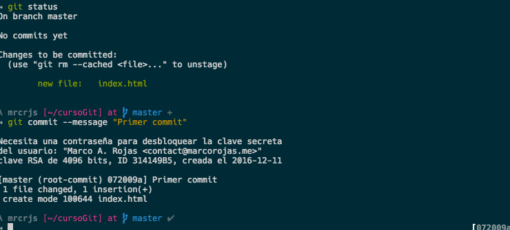
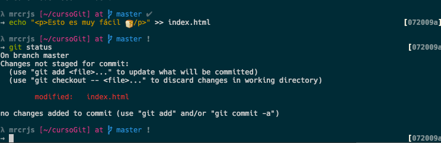
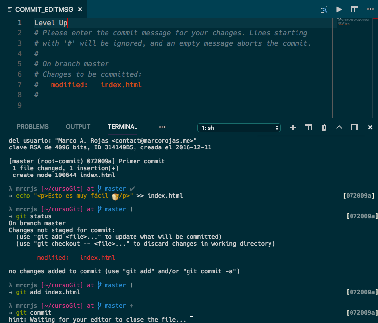
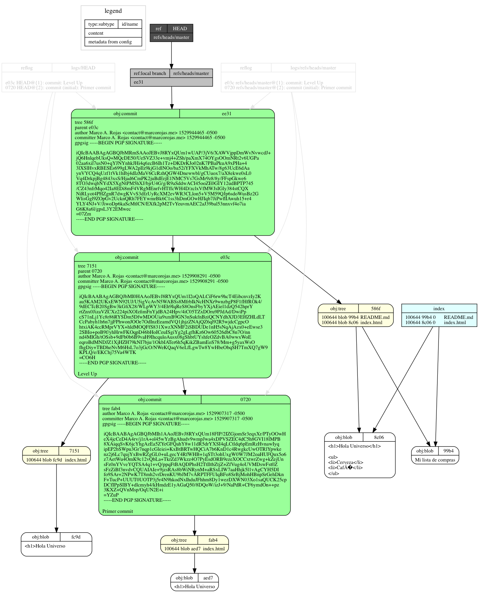
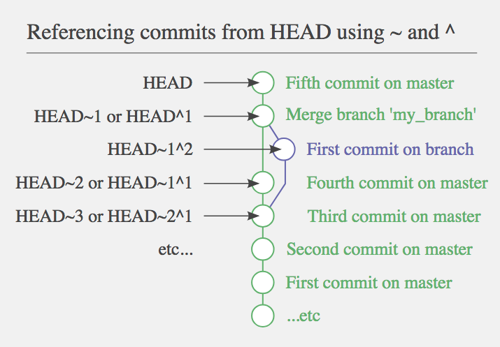

Introducción a Git
Marco A. Rojas

Git

Sistema de Control de Versiones Distribuido

go Go GO!

Configuración Inicial
$ git
$ git config --global user.name "Marco A. Rojas"
$ git config --global user.email "devmarcorojas@gmail.com"
$ git config --global core.editor nano
$ git config --list
Nuevo Repositorio
$ mkdir proyectoGit
$ cd proyectoGit
$ git init
Agregando un nuevo archivo
$ echo "<h1>Hola Universo!</h1>" >> index.html
$ git status
$ git add index.html
$ git status
Agregando un nuevo archivo
Agregando un nuevo archivo
Commits
$ git commit --message "Primer commit"
$ git status
Commits
Modificando archivos
$ echo "<p>Esto es muy fácil 🍞</p>" >> index.html
$ git status
$ git add
$ git commit
Modificando Archivos
Modificando Archivos
Committed, Modified, y Staged

Ciclo de vida de los archivos

Funcionamiento interno de Git
Commits
$ echo "<ul><li>Café</li><li>Cerveza</li></ul>" >> index.html
$ echo "Mi lista de compras" > README.md
$ git add .
$ git commit -m "Se agregó cerveza y café a la lista de compras"
Analizando Commits
$ git log
$ git log --format=fuller
$ git log --format=raw
$ git cat-file -p [object]
$ git log --graph --abbrev-commit --decorate --all --format=format:"%C(bold blue)%h%C(reset) - %C(bold cyan)%aD%C(dim white) - %an%C(reset) %C(bold green)(%ar)%C(reset)%C(bold yellow)%d%C(reset)%n %C(white)%s%C(reset)"
Porcelana
Organización de archivos
{kind=link}
Referencias Git
Labels
$ nano index.html
$ git log --oneline --graph --decorate
$ git commit -am "Se agregó tortillas a la lista de compras"
$ git log --oneline --graph --decorate
Branches
$ git branch frutas
$ git log --oneline --graph --decorate
$ git checkout frutas
$ nano index.html
$ git commit -am "Se agregaron manzanas"
$ git log --oneline --graph --decorate
Branches
$ cat index.html
$ git checkout master
$ git log --oneline --graph --decorate
$ cat index.html
$ git log --oneline --graph --decorate --all
Deshaciendo commits
$ git checkout -
$ echo "<lk> cambio con errores" >> index.html
$ git commit -am "Agregamos un error"
$ git log --oneline --graph --decorate --all
$ git reset --hard master
$ git log --oneline --graph --decorate --all
$ cat index.html
Deshaciendo commits
$ git reset --hard [id commit de frutas]
$ git log --oneline --graph --decorate --all
$ cat index.html
Deshaciendo commits otro branch
$ nano index.html
$ git commit -am "Agregamos atún a la lista"
$ git log --oneline --graph --decorate --all
$ git branch pescados
$ git reset --hard HEAD^
$ git log --oneline --graph --decorate --all
Utilizando tilde ~ y carets ^
Deshaciendo mensaje commit
$ git checkout pescados
$ nano index.html
$ git commit -am "Agremos salmpñ a la lsta"
$ git log --oneline --graph --decorate --all
$ git commit --amend --no-edit -m "Agregamos salmón a la lista"
$ git log --oneline --graph --decorate --all
Historial de cambios
$ git branch
$ git log --graph --abbrev-commit --decorate --all --format=format:"%C(bold blue)%h%C(reset) - %C(bold cyan)%aD%C(dim white) - %an%C(reset) %C(bold green)(%ar)%C(reset)%C(bold yellow)%d%C(reset)%n %C(white)%s%C(reset)"
$ git reflog show
$ git reflog show frutas
$ git reglog show pescados
Mas staging
$ git checkout master
$ nano index.html
$ git status
$ git add -A
$ nano index.html
$ git status
Verificando los cambios con diff
$ git diff
$ git diff --cached HEAD
$ git diff HEAD
Quitando archivos de Stage
$ git status
$ git reset HEAD index.html
$ git status
$ git diff
Deshaciendo modificaciones
$ git status
$ git checkout -- index.html
$ git status
$ cat index.html
Se debe tener cuidado al ejecutar '$ git checkout --' ya que es un comando destructivo, elimina los cambios que hayamos hecho sin poder recuperarlos